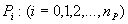
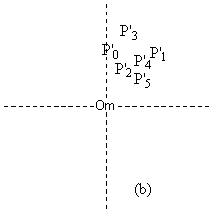
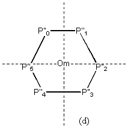
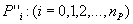
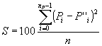
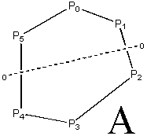
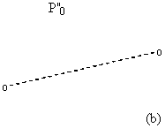
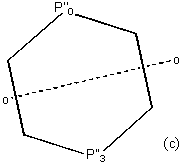
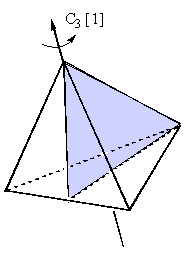

Chapter 4
<
cover
| measures
| overlap
| rotation
| csm
| ccm
| bibliography
>
Continuous Symmetry
In 1992 Zabrodsky et al. proposed a completely novel view of symmetry. Rejecting the classical ‘have or have not’ definition or the structure dependent measure mentioned so far, they chose to redefine symmetry as a continuous feature which can be measured with respect to any symmetry group or element. The method is extremely powerful and allows the direct comparison of any number of objects on a level playing field.
4.1 Continuous Symmetry Measures (CSM)
Zabrodsky et al. argue that the ‘treatment of natural phenomena in terms of "either / or", when it comes to symmetry characteristic properties, may become restrictive to the extent that some of the fine details of phenomenological observations and their theoretical interpretation may be lost". They suggest that replacing the classical decision barrier with a symmetry filter enriches the resulting information by allowing through a series of ‘maybes’. In contrast to previous measures which are based on, ‘How similar are these two objects?’, continuous symmetry is the only system that usefully answers ‘How much of that (ideal) symmetry exists in this object?’ (18,19,20,22,23,24)
The derivation of a CSM is guided by the following basic principles:
1) Non-symmetric shapes should not be treated as a perturbation of an ideal reference shape. All possible shapes should have an equal weighting in the CSM scale and perfect symmetry has no greater inherent importance than asymmetry.
2) Assessing symmetry should be detached from referencing to any specific shape. The measure should be with respect to symmetry elements or groups and not to shapes owning them.
3) It should be possible to assess the symmetry of a given object with respect to any symmetry group or element. Therefore it should be possible to calculate a complete symmetry profile for a molecule.
4.2 Two Dimensions
Consider a shape A outlined by a series of points;

Say that we are interested in measuring its symmetry relative to an undeclared symmetry element e . We can now define a CSM in terms of the minimum distance that its Pi must be displaced in order that shape A acquires element e . In order to measure this CSM, we must know the points that define A and also the points of the nearest shape to A that has the required symmetry element. The method proposed is essentially a system for finding this nearest shape.
The nearest shape, and hence the value of the CSM relative to it, will change depending on the symmetry element that you choose. For example, A may be chosen to be a frozen moment in some vibrational distortion of benzene [4.1.1]. The nearest shapes with respect to symmetry elements C2, C3, C6 and s are shown. Unsurprisingly the nearest C6 shape is an undistorted hexagon. While we could expect a hexagon to be the closest C6 shape to A, we must not assume it. This is because CSM must be relative to symmetry elements and not to particular shapes. In this case it is not intuitively obvious which C3 (for example) shape is closest to A, however a procedure called folding/unfolding will find it automatically.

4.3 Folding & Unfolding
Every symmetry element e has a symmetry operation associated with it. If an arbitrary point P0 repeatedly undergoes that symmetry operation, it will form a shape A’ that must have element e . This process is called unfolding and is illustrated in [4.3.1] where P0 is unfolded by C3 (3 x 120o rotations) to form a triangle.
The same process in reverse allows us to fold up an e symmetrical shape by e to leave a single point. If shape A does not have symmetry element e , the folding procedure will leave a scattered cluster of points rather than a single one. This immediately suggests a general method for finding the closest symmetrical shape required for the CSM. The procedure for measuring the CSM of a shape A with respect to Cm element is as follows:

1) Draw A as a vertex polygon, numbered in clockwise order. This numbering is important as it records the connectivity of the vertices in the shape.
2) Identify the centre of mass (Om), generally by averaging the co-ordinates of the vertices – in the case of a molecule you might choose to take point masses into account.
3) Scale A so that the furthest distance Pi – Om is one. This is done to ensure the resulting measure is scale invariant. [4.3.2] (a)
4) Fold the points Pi by Cm-1 about Om to form a cluster of points P’i where P1 maps to P’1 etc. Note that the each rotation must be equal to 360 i / m degrees; for a triangle under C3 the Po does not rotate, P1 is rotated by 120o and P2 by 240o. [4.3.2] (b)
5) Define P’’o as the mean average of all the points P’i [4.3.2] (c)
6) Unfold by Cm from P’’0 to give vertices 
The shape they define is the closest Cm symmetry shape to A and is named A’. This also ensure the measure is rotation and translation invariant. The ordering of unfolding is important if the connectivity is to be maintained. [4.3.2] (d)
7) The CSM is now defined as the mean square of the translation distances Pi – P’’i. This term is isotropic, continuous, differentiable and ranges from 0 to 1. The measure is sometimes scaled from 0-100% for convenience.


In order to get the minimum value of S, this calculation should be repeated for all possible orientations of A and A’ and all possible orderings of Pi and P’’i In practice, this measure is calculated by computer and the process repeated for a large number of orientations and all orders. This process is equivalent to finding the best (smallest) cluster of folded points (hence closest to symmetry).
This basic scheme must be adapted slightly in order for it to be completely general. Consider what happens when nP (the number of vertices) is greater than Cm – for example, if we want to measure the symmetry of benzene with respect to element C3. The points are simply divided up so that there are q sets of n interlaced points to which the procedure can be applied separately. For benzene this works out as two triangles. These are then translated so that their centres of mass are over that of the original shape. Once the A’ has been found, the CSM is measured as normal. In the cases such that the number of vertices is less than m, it is possible to add in arbitrary extra vertices to allow the calculation to take place. Such a case occurs when attempting to measure cyclopentadiene symmetry relative to C6.
A similar procedure is used for s symmetry except the folding/unfolding is across a chosen reflection axis. The reflection process can only be carried out on 2 points at any one time, so a shape of Pi points must be split up into i / 2 point pairs:


1) Pair the vertices of the polyhedron. If A has an even number of vertices then split the shape into two equal halves whilst preserving the point ordering. Folding/unfolding is then carried out on opposite pairs – one in each half of A. For distorted benzene a possible pairing is (P1, P2) (P0, P3) (P5, P4). There are others and choice is irrelevant [4.3.4] If A has an even number of vertices, then one of them (say P0) is duplicated and the splitting chosen so that one copy falls in each half. Similarly, any points that lie on the splitting line should be duplicated and one put in each half.
2) Folding/unfolding is carried out for each point pair individually. For each pair (P0, P3), the first point is relabelled P’0 (folding by E) and the second is reflected across the chosen axis to P’3 (folding by s ). [4.3.5] (a)
3) The points are then averaged to P’’0 and this is duplicated and reflected back across the axis to form P’’3 (unfolding by E, s ). These points are collected with those from the other point pairs and collectively form the closest shape to A with a reflection plane = A’. [4.3.5] (b) & (c)
4) The CSM is calculated by mean squares as described before. Minimisation, this time over all possible reflection axes is again required.
These two procedures (combined when necessary) can be extended to calculate a CSM for any molecule that can be described by its skeletal backbone. In the case of branched and linear structures, atoms are simply labelled down their backbone and the procedure carried out as described.
While Zabrodsky et al. were only interested in purely geometrical features, they note that very similar measures could be based on the ‘shape of mass distributions, charge distributions or any other physical property’.(19,25) Measuring the CSM of a three dimensional object or with respect to a symmetry group rather than a lone element simply involves the enhancement of ideas described here.
4.4 Symmetry Groups
Symmetry groups are a convenient description of an object’s symmetry, since they avoid having to list all the symmetry elements. For this reason we would like to be able to measure a CSM with respect to any symmetry group rather than just its elements.
To investigate the behaviour of folding/unfolding by a symmetry group, we construct a two dimensional D3 {C3, s } shape by unfolding it from a single arbitrary point. The D3 symmetry group consists of the following symmetry operations:
g0 = E = the identity (no change)
g1 = s = reflection across a line
g2 = C3 = 120o anticlockwise rotation about a point
g3 = C3 s = s C32 = 240o rotation followed by reflection
g4 = C32 = 240o anticlockwise rotation about a point
g5 = C32 s = s C3 = 120o rotation followed by reflection
The D3 group could be of any orientation and any position. In order to make the calculations easier we lock the rotation point to the origin and the reflection line to the y axis (alternatively set the Cartesian axes to fit the group, no distinction).
Taking P0 to be our arbitrary point in the xy plane [4.4.1] (a), we then unfold by applying the symmetry elements g0-g5 in order [4.4.1] (b) to yield the points P0 - P5 [4.4.1] (c). Note that this order of the symmetry elements automatically yields the correct connections. Many other orders are possible but it is natural to select one that will maintain the desired connectivity.
Folding, unfolding and the calculation of the CSM is exactly the same as before. The only extra requirement is to work out the order in which each symmetry element must be applied to a vertex in order to maintain the connectivity of A. Folding is then by g0-1 for P0, g1-1 for P1 etc. The points are averaged and unfolded in the same order to give A’. The minimum CSM is then calculated from A and A’.
4.5 Three Dimensions
Consider the distorted tetrahedron [4.4.1] (a), this might be a frozen moment in a CX4 vibration mode or it might represent different substituents on an sp3 carbon centre. The situation is very similar to that of benzene in [4.2.1]. We ask how much symmetry is there in (a) relative to any symmetry element or group. The Td case is obvious – we would expect (but should not assume) that this will be the simple tetrahedron (b). It is less obvious that the closest C3v symmetry shape is a stretched tetrahedron (c), and even less so that the closest D3h is (d). How then do we extend the CSM approach to these shapes? As previously mentioned, the Td group has 24 elements:
Td: {E, 8 C3, 3 C2, 6 S4, 6 s d}
For our purposes, only one s reflection is useful and therefore the elements are rewritten (the above elements could be used but this is easier):

a) E (the identity)
b) 4 C3 rotations: {C3 [1], C3 [2], C3 [3], C3 [4]}
c) 4 C32 rotations: {C32 [1], C32 [2], C32 [3], C32 [4]}
d) 3 C2 rotations: {C2 [12], C2 [23], C2 [31]}
e) All of the above with a s reflection in the chosen plane (any). Remember that s E = s .
Given an arbitrary point P0, unfolding by 24 elements will leave a Td symmetric 24-polyhedron [4.5.2] Given a 24 vertex A we can fold and unfold by all the elements to get A’ and calculate the CSM as usual.
A much more likely situation is that A is a four vertex shape. In order to fold the four vertices to a single cluster, we need to fold each point by 6 of the 24 elements but we do not know which six. It is possible to minimise the folding over all possible permutations, but a more efficient method would be preferable. In addition, the CSM requires a 4 vertex A’, not the 24 vertices produced by simple unfolding from a point.
We must find the correct placement of the Cartesian axis and the reflection plane that results in elements unfolding to the same co-ordinates. For example, the 24 elements of the Td group will unfold a correctly placed P0 to four clusters of six overlaid points. Therefore the elements can be split into four groups, all of which will unfold P0 to the same co-ordinates. Only one element from each group needs to be used in unfolding. This also tell us which elements each vertex in A should be folded by, in order to leave the smallest cluster.
Finding the correct position of P0 involves locating co-ordinates from which six of the symmetry elements will leave it unchanged. E must be one of the six elements and if P0 is placed on the mirror plane then s will be another. By placing P0 on a C3 axis it then becomes invariant to rotation about that axis as well as reflection. This means the six element groups for P0 can be identified as:
G0: {E, s , C3 [1], C32 [1], s C3 [1], s C32 [1]}
Similarly, the elements that unfold P0 to P1, P2 and P3 are:
G1: {C3 [3], C32 [4], s C32 [2], s C3 [4], C2 [12], s C2 [31]}
G2: {C32 [2], C3 [4], s C3 [3], s C32 [4], C2 [31], s C2 [12]}
G2: {C3 [2], C32 [3], s C3 [2], s C32 [3], C2 [23], s C2 [23]}
As before, we use this unfolding of the symmetric shape as a guideline for the folding/unfolding of A. Taking A to be a distorted tetrahedron with vertices P0, P1, P2 and P3 centred on O [4.5.4] (a);
1) Fold each vertex Pi by the six elements in group Gi. This results in a cluster of 4 x 6 = 24 points. [4.5.4] (b)
2) Average these points to yield P’’0. [4.5.4] (c)
3) Unfold by one element from each of the groups G0 to G3 to give our nearest symmetric shape A’. Since the elements in the groups are all equivalent with each other it doesn’t matter which four are chosen. [4.5.4] (d)
4) Calculate CSM from A and A’ as normal.
If our A had 8 vertices (4x2) these would be split into two sets of four and the folding/unfolding process carried out on each set separately. The closest shape A’ would then be defined by all eight resulting vertices. This approach is identical to that used in 2D.
By using the procedures outlined in this chapter, symmetry measures can be calculated for point defined structure, with respect to any symmetry group, further worked examples are given in the literature. The generality of the CSM and its flexibility makes it a powerful investigative tool and recent research includes areas such as: fluxionality, concerted reaction symmetries, optical responses of distorted molecules and the analysis of other symmetry measures.(19, 26,27)
--> next
<
cover
| measures
| overlap
| rotation
| csm
| ccm
| bibliography
>